Toggle navigation
Ко-Пай
Услуги
Контакт
Ко-пай
Първото място за съвместно КОпане
Картофите от нас, копането от вас!
Услуги
КоПач
 1 брой лопата
Споделена нива с картофи
Възможност за достъп с домашни любимци
КоПач Про Плюс
1 брой лопата
Споделена нива с картофи
Възможност за достъп с домашни любимци
Осигурена ракия и салата
Гъста сянка под дърво
КоНива
4 броя лопати
Собствена нива - 4 декара
Възможност за избор на отглежданите растения
Възможност за достъп с домашни любимци
Допълнителни услуги
Наем на трактор
Наем на магаре
Домашна ракия
Наем на казан
Контакти
Жиленци Рисърч Център